四大产品线 · 覆盖夹紧、定位、交换、自动化全场景，提供完整的机加工解决方案
柏威产品体系围绕"夹紧、定位、交换、自动化"四大核心能力展开，可根据客户精度、节拍、自动化程度需求灵活组合。
液压 / 气动 / 自动 / 手动夹具，擅长各类金属切削夹具，2-3秒快速夹紧。
球锁定位（<±0.013mm）/ 零点定位（≤0.003mm），实现瞬时定位与高刚性。
交换工作台，实现工件或夹具快速交换，提升机床利用率，缩短辅助时间。
协作机器人集成 / 非标自动化设备，提供交钥匙工程与个性化改造方案。
点击下方分类标签，快速筛选您需要的产品类型


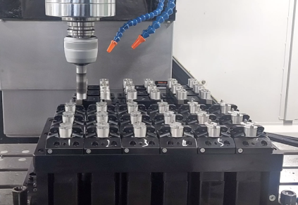

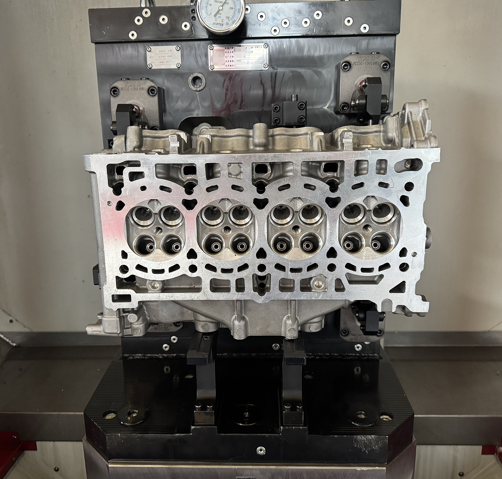
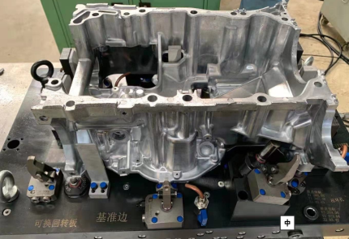
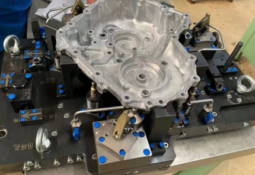
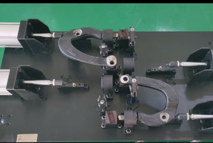
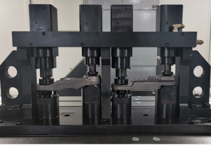
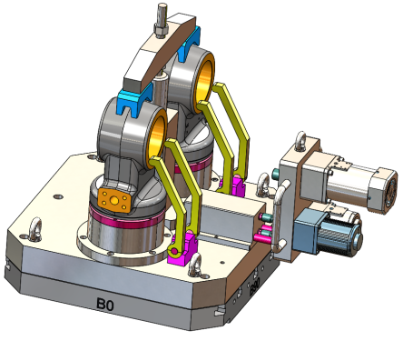
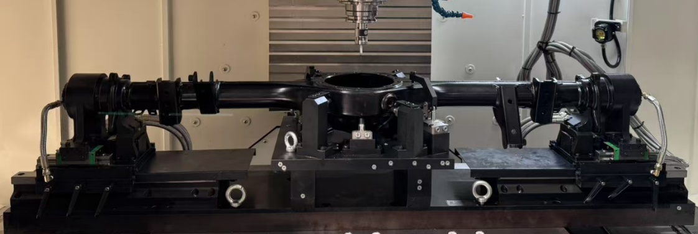

重复定位精度 < ±0.013mm，实现瞬时定位和夹紧，刚性好，减少换装时间。
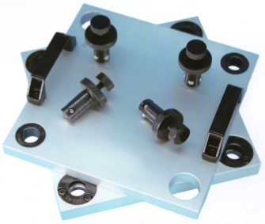
1 套系统需至少 2 个球锁轴 + 2 个接受套，模块化配置灵活。

重复定位精度 ≤ 0.003mm，超高精度快速换装，适合精密加工。
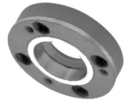
根据产品精度及加工需要选择，实现工装快速更换，提高生产效率。

实现工件或夹具快速交换，提升机床利用率，缩短辅助时间，适配多种机床。
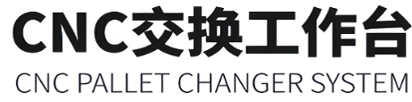
标准托盘接口，与零点定位配合，构建高效柔性加工单元。

体积小、灵活、安全，接管上下料等简单重复任务，提高产量与质量。
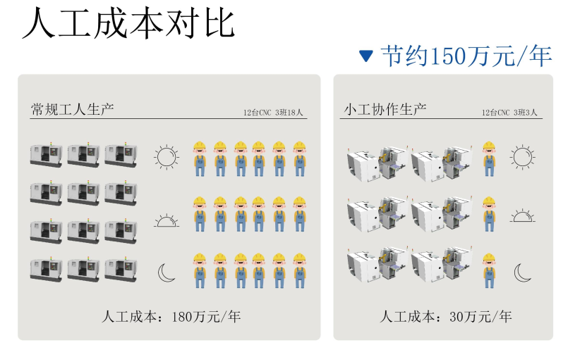
一体化交钥匙工程，针对客户现有设备提供个性化改造，经济高效。
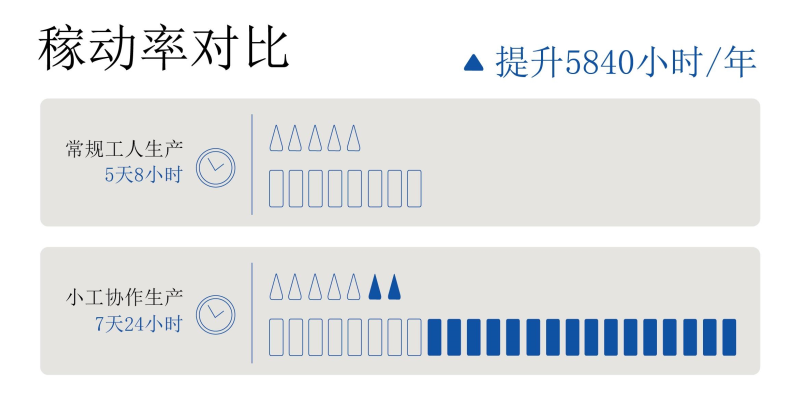
根据工艺需求定制研发，提供完整服务包：交钥匙方案、培训、陪产、远程支持。
从效率、精度、智能化、安全、稳定性五大维度，看液压夹具如何全面领先
| 对比维度 | 手动夹具 | 液压夹具 |
|---|---|---|
| 效率 | 费时费力 | 省时省力，夹紧/松开仅需 2-3 秒 |
| 精度 | 夹紧偏差 15%-25% | 自动夹紧偏差仅 1%-1.5% |
| 智能化 | 不具备 | 可自动化，状态监测，智能生产 |
| 安全 | 不持续跟进，易松动 | 毛坯压溃点可持续跟进压紧 |
| 稳定性 | 支撑力偏差 25%-35% | 液压辅助支撑力偏差仅 0.5%-0.8% |
根据产品精度及加工需要选择合适的定位系统
Ball-Lock Positioning System
| 重复定位精度 | < ±0.013mm |
|---|---|
| 组件配置 | 至少 2 个球锁轴 + 2 个接受套 + 2 个定位套 |
| 核心特点 | 瞬时定位与夹紧，刚性好 |
| 主要优势 | 显著减少换装时间，提升效率 |
| 适用场景 | 中等精度要求的快速换装 |
Zero-Point Positioning System
| 重复定位精度 | ≤ 0.003mm |
|---|---|
| 组件配置 | 零点定位器 + 接口托盘 |
| 核心特点 | 超高精度快速换装 |
| 主要优势 | 实现工装快速更换，提高生产效率 |
| 适用场景 | 高精度、高节拍的精密加工 |
20年行业经验技术团队，为您提供 1 对 1 方案设计